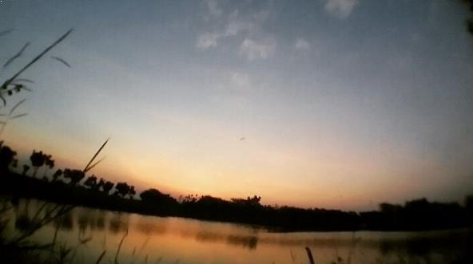

KOTA TAYUB
Wisata Bojonegoro
Kabupaten Bojonegoro merupakan salah satu wilayah yang layak menjadi tujuan destinasi akhir pekan. Sebagai salah satu kabupaten yang terletak di bagian utara Jawa Timur, Bojonegoro berbatasan langsung dengan Kabupaten Tuban di utara, Kabupaten Nganjuk, dan Ngawi di selatan, serta Kabupaten Blora di Barat. Kondisi topografi Bojonegoro didominasi oleh perbukitan di bagian selatan dan utara, serta dataran rendah di sepanjang aliran sungai Bengawan Solo. Kondisi geografis yang sedemikian rupa menyebabkan Kabupaten Bojonegoro memiliki panorama alam yang indah
Wisata Air Terjun
Air Terjun Kedung Maor
Air Terjun Kedung Peti
Air Terjun Clebung Bubulan
Air Terjun Grojogan Pucang Arum
Air Terjun Krodonan
Wisata Waduk & Bendungan
Waduk Pacal
Waduk Pedang
Bendungan Gerak
Wisata Pegunungan
Agro Wisata Belimbing

Wisata Bukit Tono
Wisata Negeri Atas Angin
Wisata Alam
Hutan Jati Bojonegoro
Wisata texas

Kayangan Api
Wisata Kota
GoFun Entertainment Complex
Taman Rajekwesi